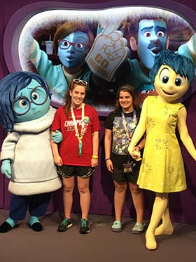

This webpage will give you tips on how to have the best Disney experience.
I have been to Disney World 7 times and I have been on a Disney crusie 3 times. Throughout my trips I have learned some of the major DO's and DON'Ts
"The Most Magical Place On Earth"-Walt Disney
 These are not comfortable shoes to walk in!!
| Rock 'n' Roller Coaster | This ride is very high thrill and go super fast. It simulates that you are going on a VIP tour with Aerosmith. |
| Expedition Everest | This ride is a rollercoaster that reveolves around a Yeti and goes in loops and trun and even backwards! |
| Star Wars: Rise of the Resistance | This ride is one of the relaistic looking rides Disney has to offer. It is very thrilling and takes place on a track less cart puts riders in the middle of an altercation between the Resistance and the First Order. |
| Jungle Cruise | The excting thing about this ride is the Jungle Crusie tour guides. These are proubaly the most funniest workers at Disney and are making jokes the entire ride. |
| Space Mountain | This ride is a fast roller coaster indoors and in the dark with lots of lights simulating flying in space! |
Email: disneywithbrooke@email.com
Phone:123-456-7890